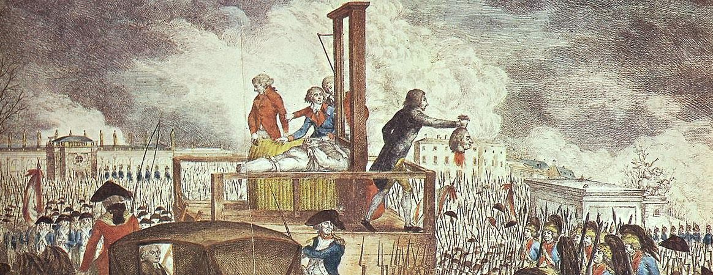
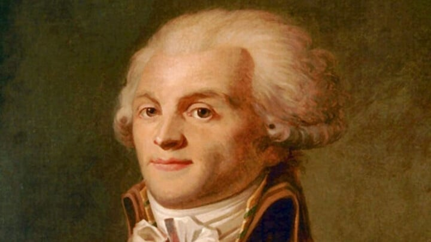

First French Republic History
How It Started (1792)
France had been ruled by King Louis XVI, but growing anger over high taxes, inequality, and food shortages led to revolution in 1789. By 1792 the monarchy was abolished, and France was declared a republic meaning there would be no king, and power would belong to the people.
Louis XVI was later executed in 1793, along with Queen Marie Antoinette.
Major Phases of the First Republic
The National Convention (1792-1795)
This was the first republican government. It faced:
War against other European monarchies
Internal rebellions
Economic crisis
During this period, radical leaders like Maximilien Robespierre led the Reign of Terror (1793-1794), where thousands were executed for being suspected enemies of the revolution. Robespierre was eventually arrested and executed in 1794.
 The Directory (1795-1799)
After the Terror ended, a more moderate government called the Directory took power. It was:
Politically unstable
Corrupt
Dependent on the military
This instability allowed a rising general, Napoleon Bonaparte, to gain influence.
End of the First Republic (1799-1804)
In 1799, Napoleon staged a coup (the Coup of 18 Brumaire) and became First Consul. Although France was technically still a republic, Napoleon held most of the power.
In 1804, he crowned himself Emperor, officially ending the First Republic and beginning the First French Empire.